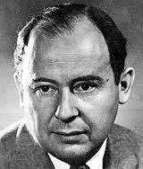
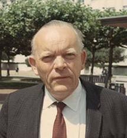
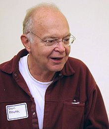

| Choisissez votre langue ! | Choose your language ! |
Simulation d'épreuves aléatoires
Simulation of random trials
Comme nous l'avons vu dans le , le hasard est une notion relativement difficile à définir.
La nécessité de produire de longues séries de nombres simulant le hasard, c'est à dire aussi imprévisibles que possible, tout en ayant d'autres qualités, comme une répartition aussi uniforme que possible est une préoccupation permanente des informaticiens et cela depuis le début de cette science.
En général, ces séries sont utilisées pour des programmes de simulation consistant bien souvent à vérifier des lois statistiques ou à déterminer expérimentalement des probabilités dont le calcul est difficile. Il y a donc un impératif de coût, les nombres 'aléatoires' que nous appelerons plus justement 'pseudo-aléatoires' doivent être produits par des procédés simples n'impliquant pas des temps de calculs trop longs.
L'utilisation d'algorithmes précis permet en outre la reproductibilité, ce qui peut être intéressant quand on veut comparer deux lois différentes avec la même série aléatoire. Il existe donc des méthodes orientées vers des algorithmes déterministes et d'autres mélangeant les techniques en faisant appel à des données physiques imprévisibles comme le contenu de certains registres volatiles de l'ordinateur.
Voici pour commencer les portraits de quelques mathématiciens ayant largement contribué à la solution de ce problème.
La nécessité de produire de longues séries de nombres simulant le hasard, c'est à dire aussi imprévisibles que possible, tout en ayant d'autres qualités, comme une répartition aussi uniforme que possible est une préoccupation permanente des informaticiens et cela depuis le début de cette science.
En général, ces séries sont utilisées pour des programmes de simulation consistant bien souvent à vérifier des lois statistiques ou à déterminer expérimentalement des probabilités dont le calcul est difficile. Il y a donc un impératif de coût, les nombres 'aléatoires' que nous appelerons plus justement 'pseudo-aléatoires' doivent être produits par des procédés simples n'impliquant pas des temps de calculs trop longs.
L'utilisation d'algorithmes précis permet en outre la reproductibilité, ce qui peut être intéressant quand on veut comparer deux lois différentes avec la même série aléatoire. Il existe donc des méthodes orientées vers des algorithmes déterministes et d'autres mélangeant les techniques en faisant appel à des données physiques imprévisibles comme le contenu de certains registres volatiles de l'ordinateur.
Voici pour commencer les portraits de quelques mathématiciens ayant largement contribué à la solution de ce problème.
Galerie des portraits
As we saw in the , chance is a relatively difficult notion to define.
The need to produce long series of numbers simulating chance, that is to say as unpredictable as possible, while having other qualities, such as a distribution as uniform as possible, is a permanent concern of computer scientists and this since the beginning of this science.
In general, these series are used for simulation programs often consisting of verifying statistical laws or experimentally determining probabilities whose calculation is difficult. There is therefore a cost imperative, the 'random' numbers which we will more aptly call 'pseudo-random' must be produced by simple processes that do not involve too long calculation times.
The use of precise algorithms also allows reproducibility, which can be interesting when you want to compare two different laws with the same random series. There are therefore methods oriented towards deterministic algorithms and others mixing techniques by using unpredictable physical data such as the content of certain volatile computer registers.
To begin with, here are the portraits of some mathematicians who have largely contributed to the solution of this problem.
The need to produce long series of numbers simulating chance, that is to say as unpredictable as possible, while having other qualities, such as a distribution as uniform as possible, is a permanent concern of computer scientists and this since the beginning of this science.
In general, these series are used for simulation programs often consisting of verifying statistical laws or experimentally determining probabilities whose calculation is difficult. There is therefore a cost imperative, the 'random' numbers which we will more aptly call 'pseudo-random' must be produced by simple processes that do not involve too long calculation times.
The use of precise algorithms also allows reproducibility, which can be interesting when you want to compare two different laws with the same random series. There are therefore methods oriented towards deterministic algorithms and others mixing techniques by using unpredictable physical data such as the content of certain volatile computer registers.
To begin with, here are the portraits of some mathematicians who have largely contributed to the solution of this problem.
Portrait gallery
| John Von Neumann (1903-1957/H-USA) | Derrick Henry Lehmer (1905-1991/USA) | Donald Ervin Knuth (1938-.../USA) |
|  |  |  |
Citations
"Quiconque considère des méthodes arithmétiques pour produire des nombres aléatoires est, bien sûr, en train de commettre un péché. " (John Von Neumann)."Les générateurs de nombres aléatoires ne doivent pas être choisis au hasard." (D. Knuth)
Générateurs congruentiels linéaires
Il s'agit de l'algorithme le plus utilisé pour produire des nombres aléatoires depuis qu'il a été inventé en 1948 par D.H Lehmer.Ce sont les récurrentes :
xn+1 = ( a * xn + b) mod c
Elles dépendent des constantes a,b et c ainsi que du terme initial x0 ('seed').
Dans tous les cas les nombres générés (sauf éventuellement le premier) sont compris entre 0 et c-1.
Premiers essais (peu concluants)
Pour les valeurs (25,16,256,12) tous les nombres générés sont pairs...Pour les valeurs (25,16,256,11) tous les nombres générés sont impairs...
Pour les valeurs (25,16,256,10) c'est encore pire, la suite est stationnaire...
Programme Python :
Quotes
"Anyone who attempts to generate random numbers by deterministic means is, of course, living in a state of sin." (John Von Neumann)."Random numbers should not be generated with a method chosen at random." (D. Knuth)
Linear congruential generators
It is the most widely used algorithm for producing random numbers since it was invented in 1948 by D.H Lehmer.These are the recurring :
xn+1 = ( a * xn + b) mod c
They depend on the constants a,b and c as well as the initial term x0 ('seed').
In all cases the numbers generated (except possibly the first) are between 0 and c-1.
First attempts (inconclusive)
For the values (25,16,256,12) all generated numbers are even...For the values (25,16,256,11) all numbers generated are odd...
For the values (25,16,256,10) it's even worse, the sequence is stationary...
Python program:
Équivalent julia 1.6 :
Julia 1.6 equivalent:
Suivons maintenant les conseils de Knuth
Pour ne pas retrouver les défauts graves rencontrés ci-dessus, il faut regarder cette suite d'un peu plus près. Si on choisit b non nul , il est toujours possible d'obtenir une période de longueur c (donc pas de risque de bloquage puisqu'on va retrouver tous les nombres entre 0 et c-1 dans la suite).D. Knuth établit une liste de critères que doivent remplir a,b et c pour cela :
- b et c doivent être premiers entre eux
- a-1 doit être un multiple de p, pour tout p nombre premier diviseur de c
- a-1 doit être un multiple de 4 si c est un multiple de 4
- si c est une puissance de 2, le bit de poids faible des nombres produits vaut alternativement 0 et 1
a=31415821 b=1 c=100000000 x0=0
Code Python :
Let's now follow Knuth's advice
In order not to find the serious faults encountered above, it is necessary to look at this suite a little more closely. If we choose b non-zero , it is always possible to obtain a period of length c (therefore no risk of blocking since we will find all the numbers between 0 and c-1 in the sequence).D. Knuth establishes a list of criteria that a, b and c must meet for this:
- b and c must be relatively prime
- a-1 must be a multiple of p, for any p prime divisor of c
- a-1 must be a multiple of 4 if c is a multiple of 4
- if c is a power of 2, the least significant bit of the numbers produced is alternately 0 and 1
a=31415821 b=1 c=100000000 x0=0
Python code:
Équivalent Julia 1.6 :
Julia 1.6 equivalent:
Regardons maintenant les chiffres des unités de la suite générée. C'est Robert Sedgewick qui donne cet exemple.
Encore quelques exemples célèbres et biaisés
Le premier 'RANDU' était le générateur proposé par IBM pour sa série 370, le second était intégré à Turbo-Pascal, le troisième était le générateur d'UNIX.Code Python :
Now let's look at the unit digits of the generated sequence. It is Robert Sedgewick who gives this example.
A few more famous and biased examples
The first 'RANDU' was the generator proposed by IBM for its 370 series, the second was integrated into Turbo-Pascal, the third was the UNIX generator.Python code:
Équivalent julia 1.6 :
Julia 1.6 equivalent:
Alors que faire ?
Il existe de 'bons' générateurs utilisant la technique GCL, citons par exemple, parmi d'autres, le 'standard minimal' de Park et Miller.Code Python :
So what to do?
There are 'good' generators using the LCG technique, including, among others, the 'minimum standard' of Park and Miller.Python code :
Équivalent Julia 1.6 :
Julia 1.6 equivalent:
Générateurs à congruence additive
C'est une généralisation des suites de Fibonnaci, chaque terme étant obtenu par une addition de deux termes pris parmi les k précédents. On dit aussi suites de Fibonnaci 'lacunaires'.La méthode nécessite le stockage permanent de k nombres.
Naturellement on combine avec une congruence, donc :
xn=xn-1+xn-k (mod c)
La méthode est rapide surtout quand c est une puissance de 2.
Mitchell et Moore, après une étude théorique poussée, ont proposé le générateur suivant :
xn+1 = ( xn-24 + xn-55 ) mod m
Cette suite passe avec succès de nombreux critères de qualité.
Code Python :
Additive congruence generators
It is a generalization of Fibonacci sequences, each term being obtained by adding two terms taken from the previous k. Also known as 'lacunary' Fibonacci sequences.The method requires the permanent storage of k numbers.
Naturally we combine with a congruence, so:
xn=xn-1+xn-k (mod c)
The method is fast especially when c is a power of 2.
Mitchell and Moore, after extensive theoretical study, have proposed the following generator:
xn+1 = ( xn-24 + xn-55 ) mod m
This suite successfully passes many quality criteria.
Python code:
Équivalent Julia 1.6 :
Julia 1.6 equivalent:
Le nombre π
Une équipe de physiciens conduits par Ephraïm Fischbach du Collède des Sciences de l'université Purdue de West Lafayette (Indiana), a réalisé une étude comparative comparant l'aspect aléatoire des décimales du nombre π avec les séries produites par 30 générateurs populaires classiques.Leur conclusion est que π est un bon générateur, source acceptable de hasard, mais pas toujours le meilleur.
Une liste (non exhaustive) des algorithmes modernes
- Blum Blum Shub. Basé sur une formule utilisant des nombres premiers.
- Mersenne twister. Par Matsumoto Nishimura, rapide, a une périodicité très longue.
- Lagged Fibonacci generator. Améliore le générateur à congruence linéaire en utilisant la séquence de Fibonacci.
- Linear congruential generator. Un des plus anciens, non le meilleur, génère une séquence à partir de trois nombres.
- Yarrow algorithm, par Bruce Schneier, John Kelsey, and Niels Ferguson. Générateur cryptographiquement sûr, peut être utilisé pour générer des nombres réellement aléatoires à partir d'entrées de périphériques analogiques.
- Fortuna. Présenté comme une amélioration de l'algorithme de Yarrow.
- Linear feedback shift register. Registre à décalage dont l'entrée est une fonction linéaire de son contenu précédent. Le contenu initial est le "seed" (grain).
Simulation de 'tirs' aléatoires
Nous avons vu que les méthodes dites de 'Monte-Carlo' utilisent des 'cribles' à base de générateurs de points de l'espace [0,1]n ayant pour coordonnées des variables dont les types représentent (ou essaient de représenter) les nombres réels ('float', 'double').Or dès qu'on a une suite aléatoire d'entiers (un) répartie uniformément dans l'intervalle [0,c] la suite xn=un/c nous donne une solution. Plus c est grand et plus la précision sera grande. Comme on sait produire de telles suites pour c arbitrairement grand, on peut atteindre toute précision en décimales donnée à l'avance.
La plupart des langages fournissent de tels générateurs (random.random() en python, Math.random() en JavaScript, etc...
On peut revoir, par exemple sur , des programmes de démonstration pour les langages Python et C.
On peut se faire une idée très rapidement de la qualité de ces générateurs en visualisant le tir aléatoire par un nuage de points sur une surface ou dans un volume donné.
Voici une applet JavaScript qui test le simulateur Math.random().
Appuyer sur le bouton '+100' pour déclencher 100 tirs aléatoires.
Appuyer sur 'Recommencer' pour tout remettre à zéro.
The number π
A team of physicists led by Ephraïm Fischbach from the College of Sciences at Purdue University in West Lafayette (Indiana), carried out a comparative study comparing the random aspect of the decimal places of the number π with the series produced by 30 popular classic generators. br/> Their conclusion is that π is a good generator, an acceptable source of randomness, but not always the best.A (non-exhaustive) list of modern algorithms
- Blum Blum Shub. Based on a formula using prime numbers.
- Mersenne twister. By Matsumoto Nishimura, fast, has a very long periodicity.
- Lagged Fibonacci generator. Improves the linear congruence generator using the Fibonacci sequence.
- Linear congruential generator. One of the oldest, not the best, generates a sequence from three numbers.
- Yarrow algorithm, by Bruce Schneier, John Kelsey, and Niels Ferguson. Cryptographically secure generator, can be used to generate truly random numbers from analog device inputs.
- Fortuna. Presented as an improvement on Yarrow's algorithm.
- Linear feedback shift register. Shift register whose input is a linear function of its previous contents. The initial content is the “seed”.
Simulation of random 'shots'
We have seen that the so-called 'Monte-Carlo' methods use 'screens' based on generators of points in the space [0,1]n having as coordinates variables whose types represent (or try to represent) real numbers ('float', 'double').Now as soon as we have a random sequence of integers (un) distributed uniformly in the interval [0,c] the sequence xn=u n/c gives us a solution. The larger it is, the greater the precision will be. As we know how to produce such sequences for arbitrarily large c, we can achieve any precision in decimals given in advance.
Most languages provide such generators (random.random() in Python, Math.random() in JavaScript, etc...
You can review, for example on , demonstration programs for Python and C languages.
We can get an idea very quickly of the quality of these generators by visualizing the random firing by a cloud of points on a surface or in a given volume.
Here is a JavaScript applet that tests the Math.random() simulator.
Press the '+100' button to trigger 100 random shots.
Press 'Restart' to reset everything.
Tirs uniformes sur une figure non rectangulaire
Supposons que nous voulions déclencher un tir uniforme sur le disque de rayon 1 inscrit dans un carré de côté 2.On peut bien entendu déclencher un tir uniforme sur le carré et 'ignorer' les tirs qui sont hors du cercle (revoir par exemple ).
Cependant, pour plus d'efficacité, on peut vouloir déclencher un tir dont on sûr a priori qu'il sera dans le disque.
Une possibilité consiste à tirer une abscisse aléatoire dans l'intervalle [-1,+1] par exemple X=1-2*random.random() en python, puis à tirer ensuite un Y aléatoire uniforme dans l'intervalle [-√(1-X²),+√(1-X²)].
C'est un mauvais choix car on favorise une densité de points plus grande sur les cordes x=X lorsque X est près de -1 ou de +1.
Voir par exemple l'applet suivante fondée sur ce principe :
Uniform shots on a non-rectangular figure
Suppose we want to trigger a uniform shot on the disc of radius 1 inscribed in a square of side 2.You can of course trigger a uniform shot on the square and 'ignore' shots that are outside the circle (see for example ).
However, for more efficiency, you may want to trigger a shot that you know a priori will be in the disc.
One possibility is to draw a random abscissa in the interval [-1,+1] for example X=1-2*random.random() in python, then to draw a uniform random Y in the interval [-√ (1-X²),+√(1-X²)].
This is a bad choice because it favors a higher density of points on the x=X strings when X is close to -1 or +1.
See for example the following applet based on this principle:
Le passage en coordonnées polaires, crée un autre défaut. Il favorise une densité de points élevée sur les cercles de petit rayon, donc une densité plus élevée au voisinage de l'origine.
C'est parce qu'avec notre modèle P(ρ≤R)=R, alors que dans la réalité pour une distribution uniforme des points sur le disque P(ρ≤R)=R².
C'est parce qu'avec notre modèle P(ρ≤R)=R, alors que dans la réalité pour une distribution uniforme des points sur le disque P(ρ≤R)=R².
Switching to polar coordinates creates another defect. It favors a high density of points on circles of small radius, therefore a higher density near the origin.
This is because with our model P(ρ≤R)=R, while in reality for a uniform distribution of points on the disk P(ρ≤R)=R².
This is because with our model P(ρ≤R)=R, while in reality for a uniform distribution of points on the disk P(ρ≤R)=R².
Il est pourtant possible de générer un tir aléatoire uniforme sur un disque.
Compte tenu de la remarque précédente, il suffit pour cela de générer un angle θ uniforme sur [0,2π[ ainsi qu'un réel ρ uniforme sur [0,1], le point aléatoire étant M(√ρ.cos(θ),√ρ.sin(θ)).
L'évènement √ρ ≤ R étant alors équivalent à ρ ≤ R².
Vous pouvez, ci-dessous, observer cette simulation.
Compte tenu de la remarque précédente, il suffit pour cela de générer un angle θ uniforme sur [0,2π[ ainsi qu'un réel ρ uniforme sur [0,1], le point aléatoire étant M(√ρ.cos(θ),√ρ.sin(θ)).
L'évènement √ρ ≤ R étant alors équivalent à ρ ≤ R².
Vous pouvez, ci-dessous, observer cette simulation.
However, it is possible to generate a uniform random shot on a disk.
Taking into account the previous remark, it is enough to generate an angle θ uniform on [0.2π[ as well as a real ρ uniform on [0,1], the random point being M(√ρ.cos(θ),√ρ.sin(θ)).
The event √ρ ≤ R then being equivalent to ρ ≤ R².
You can observe this simulation below.
Taking into account the previous remark, it is enough to generate an angle θ uniform on [0.2π[ as well as a real ρ uniform on [0,1], the random point being M(√ρ.cos(θ),√ρ.sin(θ)).
The event √ρ ≤ R then being equivalent to ρ ≤ R².
You can observe this simulation below.
|
Création Gilles Dubois - licence CC-BY-SA
Created by Gilles Dubois - licence CC-BY-SA
|
Septembre 2023
September 2023
|
Version mobile Jquery
Mobile Jquery version
|
|